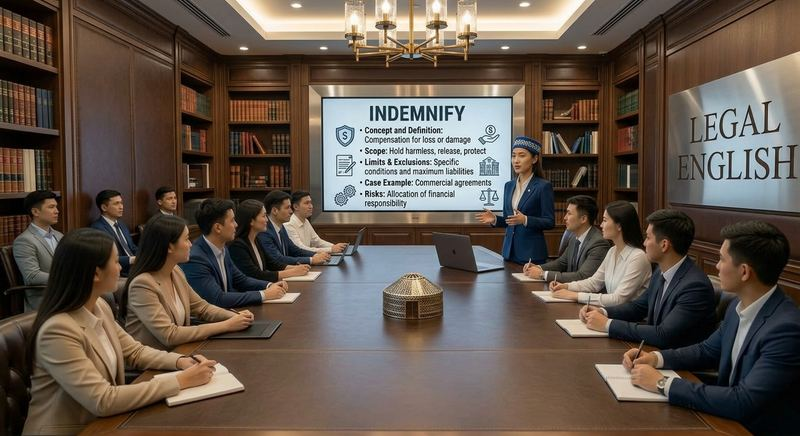
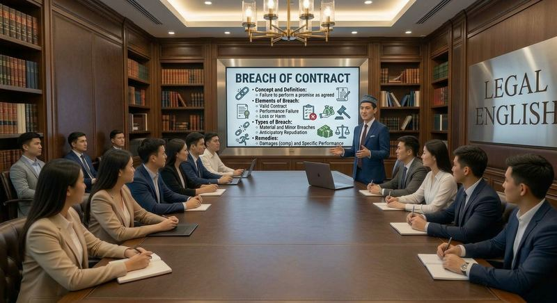

Юридический английский (Legal English) — специализированный язык права. Он отличается от обычного английского сложной лексикой, точными формулировками и особыми конструкциями.
Зачем он нужен
Для учёбы на англоязычных программах (LLB, JD, LLM)
Для работы с международными договорами и документами
Для карьеры в международных компаниях, арбитраже и консалтинге
Для подготовки к тестам (IELTS, TOEFL, LNAT, LSAT)
Что входит
Специальная юридическая лексика
Устойчивые выражения и клише документов
Чтение судебных решений и законов
Навыки юридического письма
Устная речь (презентации, переговоры, moot court)
С чего начать
При уровне Beginner / Elementary сначала подтяните общий английский
При уровне Intermediate и выше можно начинать Legal English
Даже высокий общий IELTS не всегда означает готовность к юридическому английскому. Его нужно изучать отдельно.
Начните здесь
Маршрут по разделу: идите по порядку или переходите сразу к нужному.
Пошаговое обучение: объяснения, лексика, тексты, устная практика и тест на каждом уровне. Следующий уровень открывается только после результата не ниже 80%. Результаты тестов сохраняются только в вашем браузере.
Уровни: какой нужен
Ориентиры по шкале CEFR. Это не жёсткое соответствие баллам IELTS: требования зависят от вуза и программы.
Цель
Ориентир
Читать простые юридические тексты
B1
Договоры и корпоративные документы
B2
Учёба на LL.M.
B2–C1
International / Commercial Law
C1
Международные фирмы и арбитраж
C1–C2
Направления Legal English
Короткие ориентиры по каждому направлению. Отдельных уроков по каждому направлению пока нет: близкие темы разбираются в курсе по уровням выше.
Как говорить с клиентом, коллегой, иностранным юристом или международной организацией.
Terms
client, counterparty, instructions
Documents
переписка, заметки по звонку
Skill
вежливые формулы и переговоры
Пример учебной темы: Commercial Law
Избранные термины: разберём глубже
Избранные объяснения LAWSTART: простое объяснение на английском, перевод и пример. Это отдельные разборы, а не повтор словаря ниже.

indemnify
Simple English
To compensate someone for a loss or damage.
Перевод
возмещать убытки
Example
An indemnity clause may require one party to compensate the other for specified losses.

breach of contract
Simple English
Failing to do what a contract says.
Перевод
нарушение договора
Example
Late delivery may amount to a breach of contract.
governing law
Simple English
The law that decides how a contract is interpreted.
Перевод
применимое право
Example
This Agreement shall be governed by the laws of England.
Мини-тест
Мини-тест проверяет понимание юридических терминов и не определяет официальный уровень английского языка.
LAWSTART Legal English Dictionary
Изучайте юридические термины не как обычные слова, а в контексте права.
Ниже материалы из курса Foundations of Legal English: терминология, язык договоров и юридическая переписка. В словаре пока нет разделов с лексикой для переговоров и устных выступлений.
Искать во внешних юридических источниках
Используется слово из поля выше. Официальный сайт откроется в новой вкладке. LAWSTART не получает определения с этих сайтов автоматически: это только переход к первоисточнику.
1. Общая юридическая терминология / General Legal Terminology
partyсторона (договора, дела)лицо или организация, участвующая в договоре или судебном делеBoth parties agreed to the terms of the contract.
clauseпункт, условие (договора)отдельное положение внутри договора или законаThe termination clause allows either party to end the agreement early.
liabilityответственность (в т.ч. материальная)юридическая обязанность возместить ущерб или отвечать за что-либоThe company denied any liability for the damage.
jurisdictionюрисдикциятерритория или сфера, на которую распространяется правовая власть суда или органаThe court has no jurisdiction over this matter.
plaintiffистецA person or organisation that starts a civil case by filing a claim in court. In England and Wales the usual word is “claimant”.The plaintiff claims damages of $10,000.
defendantответчикThe person or organisation against whom a claim is brought in a civil case, or who is accused in a criminal case.The defendant pleaded not guilty.
statuteзакон, принятый законодательным органомA written law passed by a legislature, such as a parliament or a congress.This statute regulates data protection.
breachнарушение обязательства или договораFailure to do what a contract or the law requires.The supplier was in breach of contract.
damagesвозмещение ущербаMoney that a court orders one party to pay to another as compensation for loss or harm. The term is typical of common-law systems.The court awarded damages of $50,000.
litigationсудебный процесс (тяжба)The process of taking a dispute to court and resolving it there.The dispute resulted in years of litigation.
counselадвокат, юридический представитель или юрисконсульт — в зависимости от контекстаA lawyer who gives legal advice or represents a party; also the legal advice itself. “In-house counsel” is a lawyer employed by a company. The exact meaning depends on context and country.She retained counsel to represent her in court.
testimonyсвидетельские показанияA statement made by a witness, usually under oath, in court.His testimony was crucial to the case.
evidenceдоказательстваFacts, documents or statements presented to a court to prove or disprove something.There was not enough evidence to convict him.
verdictвердикт присяжных или решение о виновности / невиновности — в зависимости от контекстаThe formal decision of a jury (in some systems, a judge) on the questions in a case, for example guilty or not guilty. Many legal systems do not use juries and speak of a “judgment” or “sentence” instead.The jury reached a unanimous verdict.
appealапелляция, обжалованиеA request to a higher court to review and change the decision of a lower court. Procedure and grounds differ between countries.The defendant filed an appeal against the ruling.
legaleseсложный или чрезмерно формальный юридический языкComplicated, very formal language typical of legal documents, which is hard for non-lawyers to understand.The contract was full of confusing legalese.
draftпроект документа; глагол: составлять проектA first or preliminary version of a document (noun); to write such a version (verb).Please review the draft agreement before signing.
enforceобеспечивать исполнение, приводить в исполнениеTo make sure that a law, a contract term or a court decision is actually obeyed or carried out.The court can enforce the terms of the settlement.
waiverотказ от права либо документ, фиксирующий такой отказThe voluntary giving up of a right, or the document that records this.She signed a waiver releasing the company from liability.
bindingобязательный, имеющий юридическую силуCreating a legal obligation that the parties must follow.This agreement is legally binding on both parties.
2. Язык договоров / Contract Language
Формулы и термины договоров: whereas, hereby, hereinafter, indemnify, force majeure, governing law, severability, amendment.
whereasпринимая во внимание, что; учитывая, чтовводит преамбулу договора, объясняющую контекст сделкиWhereas the Parties wish to enter into a business relationship...
herebyнастоящимформальное слово, указывающее, что действие совершается именно этим документомThe Parties hereby agree to the following terms.
hereinafterдалее именуемыйвводит сокращённое название стороны или термина для дальнейшего использования в текстеABC LLP (hereinafter referred to as “the Company”)...
thereofвышеупомянутого, этого (документа/пункта)заменяет повторение названия документа или пунктаThe Agreement and any amendments thereof shall remain valid.
indemnifyвозмещать ущерб, освобождать от ответственностиобязательство одной стороны компенсировать убытки другойThe Contractor agrees to indemnify the Client against any losses.
force majeureфорс-мажор, непреодолимая силаобстоятельства, освобождающие сторону от ответственности за неисполнение договораNeither party shall be liable for delays caused by force majeure.
terminateрасторгать, прекращать (договор)официальное прекращение действия договораEither party may terminate this Agreement with 30 days' notice.
governing lawприменимое правоправо какой страны регулирует договорThis Agreement shall be governed by the laws of the Republic of Kazakhstan.
representations and warrantiesзаверения и гарантииутверждения сторон о фактах, на которые полагается другая сторонаThe Seller makes the following representations and warranties.
covenantобязательство, обязанностьформальное обещание сделать или не делать что-либоThe tenant's covenant to pay rent on time.
considerationвстречное предоставлението, что каждая сторона получает взамен по договору (не обязательно деньги)The payment of $1 was sufficient consideration for the contract.
assignmentуступка (прав), передача (прав по договору)передача своих прав или обязательств по договору третьему лицуAssignment of this Agreement requires prior written consent.
severabilityделимость (условий договора)пункт, по которому недействительность одного условия не отменяет весь договорIf any clause is found invalid, the severability clause preserves the rest of the Agreement.
defaultнеисполнение обязательствневыполнение стороной своих обязательств по договоруThe borrower is in default under the loan agreement.
amendmentпоправка, изменение (договора)официальное изменение условий уже подписанного договораAny amendment must be made in writing and signed by both parties.
executeподписывать, заключать (договор)формально означает подписание и вступление документа в силуThis Agreement is executed as of the date first written above.
noticeуведомлениеформальное извещение одной стороны другой согласно условиям договораNotice shall be sent in writing to the address specified above.
confidentialityконфиденциальностьобязательство не разглашать информациюBoth parties shall maintain the confidentiality of the terms herein.
dispute resolutionразрешение споровраздел договора, описывающий порядок разрешения конфликтовAny dispute shall be resolved through arbitration under this clause.
null and voidнедействительный, не имеющий юридической силыдокумент или условие, которое считается никогда не имевшим силыAny provision violating local law shall be null and void.
3. Юридическая переписка / Legal Correspondence
Здесь удобнее не таблица «слово — перевод», а готовые фразы по ситуациям, как их используют в письмах.
Открытие письма
I am writing to inform you that...Пишу, чтобы сообщить вам, что...
I am writing on behalf of my client, Mr./Ms. ...Пишу от имени моего клиента...
Further to our conversation on [date]...В продолжение нашего разговора от [дата]...
We refer to your letter dated [date]...Ссылаемся на ваше письмо от [дата]...
Please find attached...Прилагаем...
Изложение сути дела
We would like to draw your attention to...Хотели бы обратить ваше внимание на...
Please be advised that...Уведомляем вас о том, что...
It has come to our attention that...Нам стало известно, что...
We hereby give notice that...Настоящим уведомляем, что...
In accordance with clause [X] of the Agreement...В соответствии с пунктом [X] договора...
Требования и запросы
We kindly request that you...Убедительно просим вас...
We would appreciate it if you could provide...Будем признательны, если вы предоставите...
Failure to respond within [X] days will result in...Отсутствие ответа в течение [X] дней повлечёт...
We reserve the right to...Мы оставляем за собой право...
Please confirm receipt of this letter.Пожалуйста, подтвердите получение этого письма.
Претензионные письма
We hereby put you on notice that...Настоящим уведомляем вас о том, что...
This constitutes a formal demand for...Это является официальным требованием о...
Unless we receive payment by [date], we will...Если мы не получим оплату до [дата], мы будем вынуждены...
We regret to inform you that legal action may follow...К сожалению, вынуждены сообщить, что могут последовать юридические меры...
Завершение письма
Should you have any questions, please do not hesitate to contact us.Если у вас возникнут вопросы, пожалуйста, свяжитесь с нами.
We look forward to your prompt response.Ожидаем вашего скорого ответа.
Yours faithfully, / Yours sincerely,С уважением,
4. Углублённые статьи по областям права (с юрисдикцией)
Здесь указан правовой контекст термина: США, Великобритания или международное право. Перевод приблизителен и не является универсальным эквивалентом. Для проверки используйте источники ниже: бесплатные словари и правовые источники.
Contract Law
considerationвстречное предоставлениеТо, что каждая сторона даёт или обещает взамен обещания другой. В общем праве простое обещание без consideration, как правило, не создаёт обязательного договора (договор, оформленный как deed, — исключение).The agreement was binding because each party gave consideration.Соглашение было обязательным, так как каждая сторона дала встречное предоставление.Юрисдикция: общее право (США, Великобритания). В гражданско-правовых системах прямого эквивалента нет: «основание» (causa) устроено иначе.
liquidated damagesзаранее оговорённые убыткиСумма, которую стороны заранее определили в договоре как оценку убытков при нарушении. Если суд сочтёт её штрафом, а не разумной оценкой, условие может не применяться.The clause fixes liquidated damages at a daily rate for late delivery.Условие фиксирует заранее оговорённые убытки в виде суммы за каждый день просрочки поставки.Юрисдикция: общее право; критерии оценки штрафа различаются в США и Англии. Близко к неустойке по функции, но правовой режим не тождествен.
repudiatory breachнарушение, равносильное отказу от договораНарушение настолько серьёзное, что другая сторона вправе расторгнуть договор и требовать убытки.The supplier’s refusal to deliver was a repudiatory breach.Отказ поставщика поставить товар был нарушением, равносильным отказу от договора.Юрисдикция: Англия и Уэльс. В США чаще говорят о material breach; понятия не совпадают полностью.
Civil Procedure
plaintiff / claimantистецЛицо, подающее иск. В США (федеральные суды и суды штатов) используется plaintiff. В гражданских делах Англии и Уэльса после реформы процессуальных правил используется claimant; в Шотландии — pursuer. В уголовном деле стороной обвинения выступает prosecution, а не plaintiff.The claimant issued proceedings in the High Court.Истец подал иск в Высокий суд.Юрисдикция: США: plaintiff; Англия и Уэльс: claimant; Шотландия: pursuer. Это не всегда точные синонимы в иных видах производства.
International Law
treatyмеждународный договорПо Венской конвенции о праве международных договоров 1969 г.: международное соглашение между государствами в письменной форме, регулируемое международным правом. В конституционном праве США слово treaty имеет более узкое значение (с согласия Сената).The treaty entered into force after the required number of ratifications.Договор вступил в силу после необходимого числа ратификаций.Юрисдикция: международное право; в США есть отдельное внутреннее значение.
ratificationратификацияДействие, которым государство выражает согласие быть связанным договором после подписания. Внутренняя процедура (парламент, глава государства) зависит от страны.The State deposited its instrument of ratification.Государство сдало на хранение ратификационную грамоту.Юрисдикция: международное право; внутренние процедуры различаются.
reservationоговорка (к международному договору)Односторонне заявление государства, исключающее или изменяющее юридическое действие отдельных положений договора для него. Не путать с бытовым «бронированием».The State made a reservation to Article 5.Государство сделало оговорку к статье 5.Юрисдикция: международное право (допустимость оговорок зависит от договора).
customary international lawмеждународное обычное правоНормы, возникающие из общей практики государств, которую они признают правом (opinio juris). Может связывать государства независимо от участия в конкретном договоре.The court relied on customary international law.Суд опирался на международное обычное право.Юрисдикция: международное право.
Human Rights
derogationотступление от обязательств (дерогация)Временное отступление государства от некоторых обязательств по правам человека в чрезвычайной ситуации при соблюдении условий договора (например, ст. 15 ЕКПЧ). Не все права допускают отступление.The State notified a derogation during the emergency.Государство уведомило об отступлении от обязательств на период чрезвычайной ситуации.Юрисдикция: международное и европейское право прав человека.
margin of appreciationпределы усмотрения государстваДоктрина Европейского суда по правам человека: свобода, которой обладают государства при применении Конвенции. Не является универсальным принципом всех судов.The Court allowed a wide margin of appreciation in this area.Суд признал в этой области широкие пределы усмотрения государства.Юрисдикция: Совет Европы (ЕСПЧ).
non-refoulementнедопущение принудительного возвращения (non-refoulement)Запрет возвращать человека в место, где ему грозит преследование или пытки. Закреплён, в частности, в Конвенции о статусе беженцев 1951 г. (ст. 33) и Конвенции против пыток (ст. 3).The principle of non-refoulement applies to this case.Принцип недопущения принудительного возвращения применяется к этому делу.Юрисдикция: международное право.
Constitutional Law
judicial reviewсудебный контроль (конституционности и законности актов)Полномочие судов проверять акты власти. В США суды могут признавать законы неконституционными. В Великобритании действует суверенитет парламента: суды проверяют решения исполнительной власти, но не отменяют Acts of Parliament (по Human Rights Act 1998 возможна декларация о несовместимости).The applicant sought judicial review of the decision.Заявитель потребовал судебного пересмотра решения.Юрисдикция: США и Великобритания: содержание различается.
due processнадлежащая правовая процедураВ США: гарантии Пятой и Четырнадцатой поправок (процедурные и материальные). В Великобритании близкие идеи выражают через natural justice и procedural fairness.The law was challenged as a violation of due process.Закон оспорили как нарушающий надлежащую правовую процедуру.Юрисдикция: США (основной контекст); в других системах эквиваленты приблизительны.
Criminal Law
mens reaвиновное состояние ума (субъективная сторона)Психическое отношение лица к деянию (умысел, неосторожность и др.). Приблизительно соответствует субъективной стороне, но не совпадает с ней по структуре.The prosecution must prove mens rea.Обвинение должно доказать mens rea.Юрисдикция: общее право.
actus reusвиновное деяние (объективная сторона)Внешняя, объективная часть преступления: действие или бездействие и его последствия. Приблизительный аналог — объективная сторона.The actus reus was an unlawful act causing harm.Actus reus состоял в противоправном действии, причинившем вред.Юрисдикция: общее право.
burden and standard of proofбремя доказывания и стандарт доказыванияВ уголовном деле в общем праве обвинение должно доказать вину beyond reasonable doubt (вне разумного сомнения). В гражданском деле стандарт ниже: balance of probabilities (Великобритания) или preponderance of the evidence (США).The standard of proof in criminal cases is beyond reasonable doubt.Стандарт доказывания по уголовным делам — вне разумного сомнения.Юрисдикция: США и Великобритания (названия гражданского стандарта различаются).
Legal Research
precedent / stare decisisпрецедент / обязательность прецедентаДоктрина общего права: суды следуют ранее принятым решениям вышестоящих судов. Решения бывают binding (обязательные) и persuasive (убедительные). В системах гражданского права роль судебных решений иная; проверяйте конкретную страну.Lower courts are bound by the precedent of higher courts.Нижестоящие суды связаны прецедентом вышестоящих.Юрисдикция: общее право (США, Великобритания).
ratio decidendi / obiter dictumправовое основание решения / попутное замечание судаRatio decidendi — часть решения, необходимая для результата; именно она создаёт прецедент. Obiter dictum — замечание «попутно», по общему правилу не обязательное.The statement was obiter dictum and not part of the ratio.Это было попутное замечание, а не часть правового основания решения.Юрисдикция: общее право (термины чаще используют в английской традиции).
Legal Correspondence
without prejudiceбез ущерба для прав; на условиях урегулированияВ Англии: пометка переписки, ведущейся в попытке урегулировать спор; такие сообщения, как правило, нельзя использовать в суде как доказательство по существу. В США похожую роль играет правило о переговорах об урегулировании (FRE 408), а выражение without prejudice чаще встречается в другом значении — при прекращении дела без права повторной подачи.This offer is made without prejudice to our client’s position.Это предложение сделано без ущерба для позиции нашего клиента.Юрисдикция: Англия (основной контекст) и США (значение отличается).
letter before claimдосудебное требование по правилам Pre-Action ProtocolПисьмо с изложением требования до подачи иска. В Англии и Уэльсе ранее называлось letter before action. В США единого официального аналога нет, чаще говорят demand letter.We sent a letter before claim and asked for a response within 14 days.Мы направили досудебное требование и просили ответить в течение 14 дней.Юрисдикция: Англия и Уэльс; в США используется demand letter.
Смотрите и учите: Legal English через кино
Сериалы и фильмы помогают привыкнуть к живой юридической речи, услышать профессиональные выражения и лучше понимать разговорный английский юристов.
Сериалы
Suits — юридическая фирма, переговоры и деловая лексика.
Boston Legal — судебные споры, аргументация и выступления адвокатов.
The Lincoln Lawyer — адвокатская практика и общение с клиентами.
The Good Wife — юридическая фирма, судебные дела и профессиональная коммуникация.
Better Call Saul — адвокатская практика, этика и переговоры.
Фильмы
A Few Good Men — судебные слушания и перекрёстный допрос.
The Verdict — судебный процесс и аргументация.
Philadelphia — дискриминация и трудовые споры.
Michael Clayton — корпоративные риски и профессиональная этика.
Erin Brockovich — защита прав граждан и экологические споры.
Как заниматься
Включите английские субтитры.
После серии выпишите 5–7 полезных английских выражений.
Найдите их значение и контекст употребления.
Прослушайте ключевые фразы и повторите их вслух.
Составьте собственные предложения с новыми выражениями.
Важное примечание: большинство перечисленных произведений отражают правовую систему США. Юридические процедуры и термины могут отличаться от казахстанских. Художественные сцены полезны для языковой практики, но не заменяют изучение законодательства и реальной юридической практики.
Официальные источники Legal English
Здесь можно изучать юридический английский непосредственно по материалам авторитетных юридических и государственных источников США и Великобритании.
Бесплатный юридический ресурс Cornell University: юридическая терминология, Wex Legal Encyclopedia, законодательство США и другие материалы для изучения Legal English.
Официальный ресурс законодательства Великобритании. Особенно полезен для изучения языка реальных законодательных актов, юридических формулировок и структуры законодательства.
Официальный регулятор solicitors в Англии и Уэльсе. Полезен для знакомства с профессиональной юридической терминологией и правилами юридической профессии.
Паспорт источников: что это и чем полезно
Словарь объясняет термины, база законодательства содержит сами акты, сайт профессии рассказывает о практике. Это разные типы источников. Главные страницы открывались при проверке 12 октября 2026; о платных и закрытых разделах уточняйте на самих сайтах.
Паспорта 5 источников: страна, тип, польза, доступ
Профессиональные правила и требования: официальная лексика регулирования.
Доступ
Открытые страницы без регистрации; уточняйте условия на сайте.
Бесплатные юридические словари и правовые источники
Словари объясняют термины. Справочники и первоисточники показывают, как право применяется на практике. Это разные задачи, поэтому ресурсы разделены. Уровень — ориентир по CEFR. Проверено 13 октября 2026.
Руководство по оформлению ссылок на американские правовые источники (издание 2026 г.). Нужно, чтобы читать и писать ссылки на судебные решения и законы.
Это руководство по цитированию, а не словарь. Условия повторного использования текста не проверялись: ссылайтесь, не копируйте.
Расшифровка сокращений названий судебных отчётов и юридических журналов; поиск по названию и по сокращению.
Бесплатный открытый доступ, ведёт Cardiff University. Это справочник сокращений, а не словарь терминов.
LAWSTART не копирует тексты этих ресурсов и не размещает их полностью: только ссылки на оригиналы. Нолo и Justia остаются в списке ниже как дополнительные словари; у части из них есть платные продукты, бесплатная только страница словаря.
Бесплатные словари и глоссарии (дополнительно)
Главные страницы этих ресурсов открывались при проверке 13 октября 2026 без входа и оплаты. Два из трёх сайтов принадлежат коммерческим издателям, поэтому рядом с определениями могут быть реклама и предложения платных услуг.
Определения юридических терминов простым английским: удобно для начального уровня. Сайт называет словарь бесплатным; печатная версия и eBook продаются отдельно.
На страницах есть предложения консультаций юристов.
Онлайн-словарь юридических и деловых терминов с алфавитным указателем. Justia заявляет, что стремится сделать право и юридические ресурсы бесплатными для всех.
Определения общие: детали зависят от юрисдикции.
Великобритания: подтверждённый бесплатный глоссарий для этого списка пока не найден. Страницы глоссариев судебной системы и прокуратуры не удалось открыть при проверке, поэтому они не добавлены. Список будет дополнен после ручной проверки.
Курсы для изучения общей юридической терминологии
Если вы только начинаете изучать Legal English, полезно сначала познакомиться с базовыми понятиями правовой системы США или Великобритании. Эти курсы помогут понять основные юридические термины и контекст их употребления.
Вводный курс по американскому праву для начинающих. Рассматриваются Tort Law, Contract Law, Property Law, Constitutional Law, Criminal Law и Civil Procedure.
Условия доступа и оплаты смотрите на странице курса Coursera.
Вводный материал по американской политико-правовой системе: федеральная система, система штатов, due process, judicial review и другие базовые понятия.
Курс архивный: возможность пройти его сейчас не гарантируется.
Как работать с юридическими терминами
Встретили незнакомый юридический термин? Проверьте его значение в Cornell Legal Information Institute (Wex). Например, такие слова, как consideration, remedy, tort, precedent или indemnify, могут иметь специальное юридическое значение, отличающееся от обычного английского.
Ваши проводники по Legal English
Девушка — помощник LAWSTARTПарень — помощник LAWSTART
AI-помощники LAWSTART
Интерактивный репетитор пока не запущен
Девушка и парень помогают пользователям ориентироваться в юридической терминологии, источниках права и учебных материалах.
Сейчас это визуальные персонажи проекта: работающего AI-агента или разговорного AI-репетитора на сайте нет.
Legal English — направление развития LAWSTART
LAWSTART развивает направление Legal English: изучение юридической лексики, практические упражнения, тестирование и последовательное освоение новых уровней.
Учебные материалы готовятся и проверяются перед запуском новых уровней и функций.